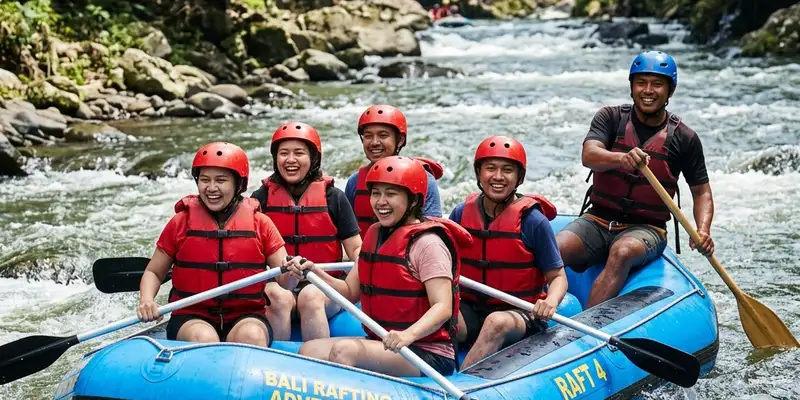

Kecelakaan rafting umumnya terjadi akibat kelalaian standar keselamatan, seperti minimnya penggunaan alat pelindung diri, guide tanpa sertifikasi memadai, atau kondisi sungai yang tidak dievaluasi sebelum kegiatan dimulai.
Ringkasan Inti
- Sebagian besar kecelakaan rafting berkaitan dengan faktor kelalaian manusia dan minimnya persiapan keselamatan
- Sertifikasi guide rafting menjadi indikator penting kompetensi dalam menangani situasi darurat di sungai
- SOP keselamatan yang jelas mencakup briefing, alat pelindung diri, dan evaluasi kondisi sungai sebelum kegiatan
- Wisatawan berhak menanyakan kualifikasi guide dan standar operasional sebelum mengikuti rafting
- Artikel ini bersifat informasi umum dan tidak menggantikan penilaian langsung terhadap kondisi operator maupun lokasi rafting tertentu
Apa Saja Penyebab Umum Kecelakaan Rafting?
Penyebab umum kecelakaan rafting meliputi kelalaian penggunaan alat pelindung diri, guide yang kurang berpengalaman, kondisi debit air yang tidak dievaluasi, serta minimnya briefing keselamatan sebelum kegiatan dimulai.
Kelalaian penggunaan pelampung dan helm menjadi salah satu faktor risiko yang sering dikaitkan dengan cedera serius saat peserta terjatuh dari perahu karet. Selain faktor peralatan, pengalaman dan kesigapan guide dalam membaca kondisi arus turut berperan besar, karena guide yang kurang terlatih berisiko mengambil keputusan yang kurang tepat saat menghadapi kondisi sungai yang berubah mendadak, misalnya debit air yang meningkat akibat hujan di hulu sungai.
Faktor lain yang juga sering menjadi penyebab kecelakaan adalah minimnya briefing keselamatan di awal kegiatan, sehingga peserta tidak memahami prosedur dasar seperti posisi duduk yang benar atau cara bertindak apabila terjatuh dari perahu.
Bagaimana Cara Mengecek Sertifikasi Guide Rafting Sebelum Berangkat?
Sertifikasi guide rafting dapat dicek dengan menanyakan langsung kepada operator mengenai lembaga pelatihan yang mengeluarkan sertifikat serta pengalaman guide dalam menangani jalur sungai yang akan dilalui.
Di Indonesia, kompetensi guide arung jeram umumnya berkaitan dengan pelatihan yang diselenggarakan oleh Federasi Arung Jeram Indonesia atau FAJI, yang menjadi salah satu organisasi yang menaungi kegiatan olahraga arung jeram secara nasional. Wisatawan dapat menanyakan kepada operator apakah guide yang akan memandu memiliki sertifikat pelatihan pemandu arung jeram serta pengalaman menangani jalur sungai yang sesuai dengan tingkat kesulitan yang akan dilalui.
Selain menanyakan sertifikat, wisatawan juga dapat memperhatikan bagaimana guide memberikan briefing di awal kegiatan, karena penyampaian briefing yang jelas dan terstruktur biasanya mencerminkan tingkat pengalaman dan profesionalisme guide tersebut.

Guide berpengalaman tidak hanya mahir membaca arus sungai, tetapi juga mampu mengarahkan peserta saat menghadapi situasi kritis.
Apa Saja Standar SOP Keselamatan yang Wajib Dimiliki Operator Rafting?
Standar SOP keselamatan yang wajib dimiliki operator rafting mencakup briefing keselamatan, penyediaan alat pelindung diri yang layak, evaluasi kondisi sungai, serta prosedur penanganan darurat yang jelas.
Beberapa elemen SOP yang idealnya dimiliki operator rafting meliputi:
- Briefing keselamatan sebelum kegiatan dimulai, termasuk instruksi posisi duduk dan cara bertindak saat terjatuh dari perahu
- Penyediaan pelampung dan helm yang sesuai standar serta dalam kondisi layak pakai
- Evaluasi kondisi debit air dan cuaca sebelum memutuskan kegiatan tetap berlangsung
- Kehadiran guide pendamping atau safety kayak yang mengawasi jalannya rombongan di sepanjang jalur sungai
- Prosedur evakuasi dan pertolongan pertama yang jelas apabila terjadi insiden selama kegiatan
Operator yang menerapkan SOP secara konsisten umumnya lebih siap menghadapi situasi tak terduga dibanding operator yang hanya mengandalkan pengalaman tanpa prosedur tertulis yang jelas.
Apa yang Membedakan Level Kesulitan Jalur Rafting?
Level kesulitan jalur rafting umumnya dibedakan berdasarkan klasifikasi grade arus, mulai dari grade rendah yang cocok untuk pemula hingga grade tinggi yang membutuhkan pengalaman dan kondisi fisik lebih matang.
Klasifikasi grade arus sungai secara umum digunakan sebagai acuan internasional untuk menentukan tingkat kesulitan jalur rafting, mulai dari arus tenang hingga arus deras dengan rintangan yang kompleks. Wisatawan pemula sebaiknya memilih jalur dengan grade yang lebih rendah dan memastikan operator memberikan penjelasan mengenai tingkat kesulitan jalur sebelum memutuskan mengikuti kegiatan.
Pemilihan jalur yang sesuai dengan kemampuan peserta menjadi salah satu langkah pencegahan penting untuk mengurangi risiko kecelakaan, terutama bagi peserta yang baru pertama kali mencoba olahraga arung jeram.
Apa Peran Alat Pelindung Diri dalam Mencegah Kecelakaan Rafting?
Alat pelindung diri seperti pelampung, helm, dan sepatu khusus memiliki peran penting dalam mengurangi risiko cedera serius saat terjadi insiden selama kegiatan rafting berlangsung.
Pelampung berfungsi menjaga peserta tetap mengapung apabila terjatuh dari perahu, sementara helm melindungi kepala dari benturan bebatuan di sepanjang jalur sungai. Sepatu khusus rafting juga membantu melindungi kaki peserta dari permukaan sungai yang berbatu maupun licin. Wisatawan sebaiknya memastikan seluruh alat pelindung diri yang disediakan operator dalam kondisi layak pakai dan berukuran sesuai sebelum memulai kegiatan.
Penggunaan alat pelindung diri yang tidak lengkap atau tidak sesuai ukuran dapat mengurangi efektivitas perlindungan, sehingga wisatawan berhak meminta penggantian apabila menemukan perlengkapan yang dirasa kurang layak.
Apa Kesalahan Umum yang Sering Menyebabkan Kecelakaan Rafting?
Kesalahan umum yang sering menyebabkan kecelakaan rafting meliputi mengabaikan instruksi guide, tidak mengenakan alat pelindung diri dengan benar, dan memilih jalur rafting yang tidak sesuai dengan kemampuan fisik peserta.
Beberapa kesalahan lain yang juga berkontribusi terhadap risiko kecelakaan antara lain memaksakan kegiatan berlangsung meski kondisi cuaca sedang buruk, tidak mendengarkan briefing keselamatan dengan saksama, serta panik secara berlebihan saat terjatuh dari perahu sehingga menyulitkan proses evakuasi oleh guide. Kesalahan-kesalahan ini sering kali dapat dicegah apabila peserta disiplin mengikuti arahan dan operator menerapkan SOP keselamatan secara konsisten.
Bagaimana Cara Memilih Operator Rafting yang Mengutamakan Keselamatan?
Operator rafting yang mengutamakan keselamatan dapat dikenali dari kelengkapan alat pelindung diri, kualifikasi guide, kejelasan SOP, serta transparansi dalam menjawab pertanyaan wisatawan terkait prosedur keselamatan.
Wisatawan disarankan untuk aktif bertanya kepada operator mengenai pengalaman guide, jenis sertifikasi yang dimiliki, serta bagaimana prosedur yang diterapkan apabila terjadi kondisi darurat di sungai. Operator yang terbuka menjelaskan prosedur keselamatan secara detail umumnya menunjukkan tingkat profesionalisme yang lebih baik dibanding operator yang enggan memberikan penjelasan rinci.
Salah satu penyedia layanan outbound dan rafting di wilayah Malang Raya yang dapat menjadi pertimbangan adalah Gemilang Katun Outbound, yang menyediakan pendampingan kegiatan luar ruang termasuk aspek koordinasi keselamatan bersama mitra operator rafting. Wisatawan tetap disarankan melakukan konfirmasi langsung terkait detail SOP dan sertifikasi guide sebelum memutuskan mengikuti kegiatan.
Kesimpulan
Kecelakaan rafting sebagian besar dapat dicegah melalui kepatuhan terhadap SOP keselamatan, penggunaan alat pelindung diri yang layak, serta pemilihan guide bersertifikat dan berpengalaman. Wisatawan sebaiknya aktif menanyakan kualifikasi guide, kondisi peralatan, dan prosedur darurat sebelum mengikuti kegiatan rafting, mengingat aktivitas ini termasuk olahraga dengan risiko fisik yang perlu dikelola dengan hati-hati. Artikel ini bersifat informasi umum, dan wisatawan disarankan berkonsultasi langsung dengan operator resmi serta memastikan kondisi kesehatan pribadi sebelum mengikuti kegiatan arung jeram.
FAQ
Penyebab paling umum berkaitan dengan kelalaian penggunaan alat pelindung diri, guide yang kurang berpengalaman, dan minimnya evaluasi kondisi sungai sebelum kegiatan dimulai.
Wisatawan dapat menanyakan langsung kepada operator mengenai lembaga pelatihan yang mengeluarkan sertifikat guide, seperti pelatihan yang berkaitan dengan Federasi Arung Jeram Indonesia atau FAJI.
Rafting secara umum dapat diikuti pemula selama memilih jalur dengan tingkat kesulitan yang sesuai dan mengikuti seluruh instruksi keselamatan dari guide yang berpengalaman.
Peserta disarankan mengikuti instruksi guide yang biasanya disampaikan saat briefing, seperti menjaga posisi tubuh mengapung dan tidak panik agar proses evakuasi berjalan lebih mudah.
Tidak, standar keselamatan dapat bervariasi antar operator, sehingga wisatawan disarankan mengecek langsung SOP dan sertifikasi guide sebelum memilih operator rafting tertentu.